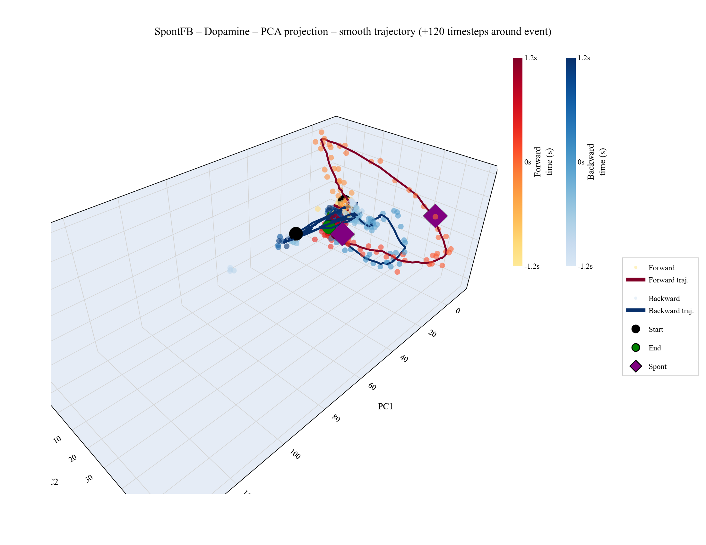
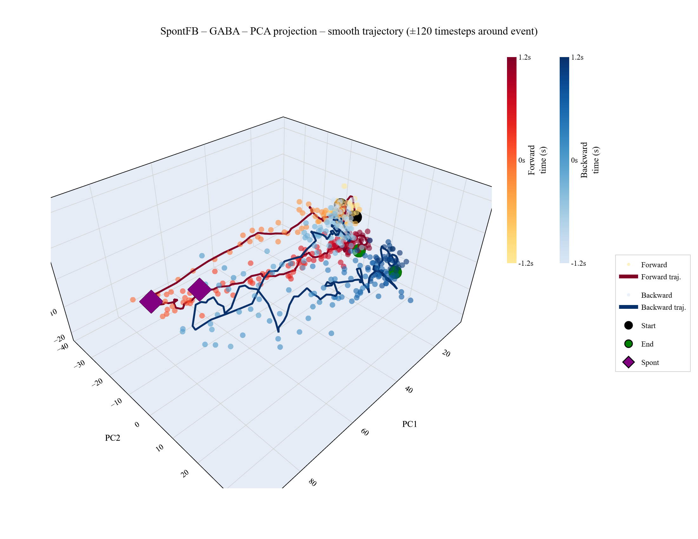
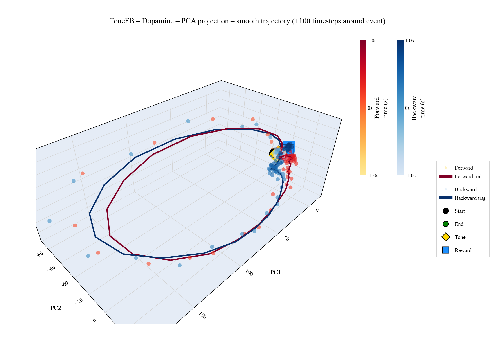
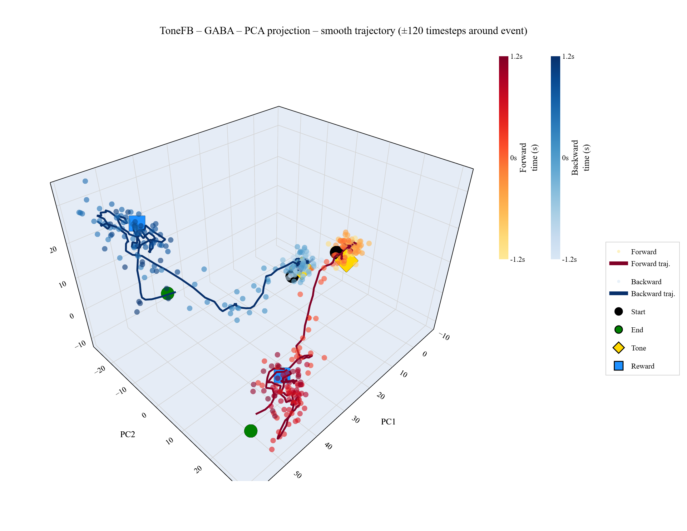
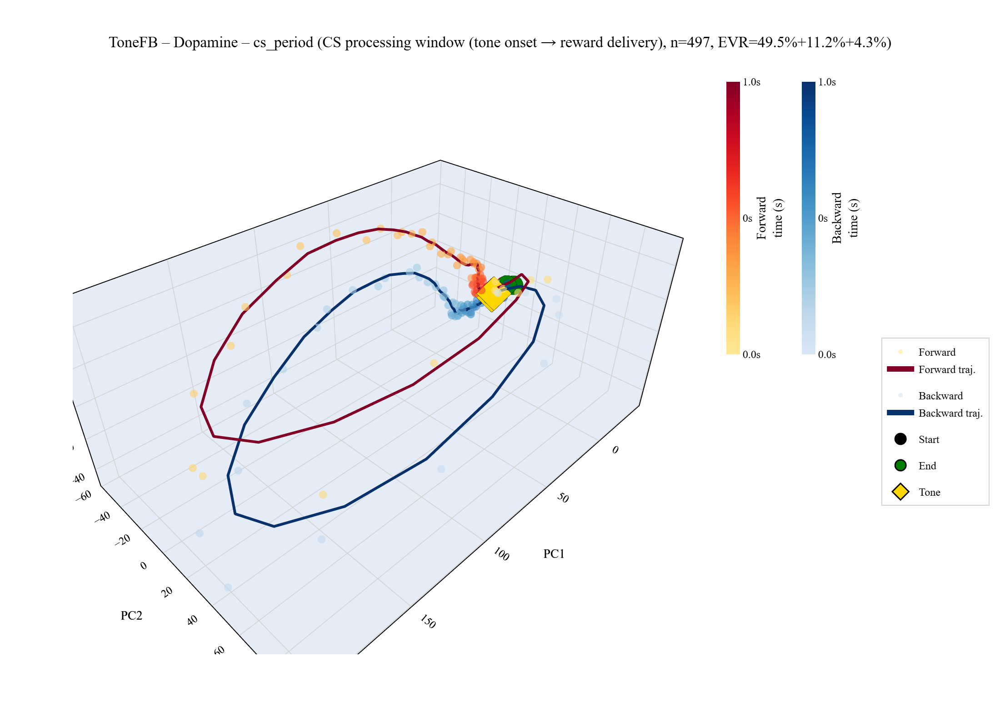
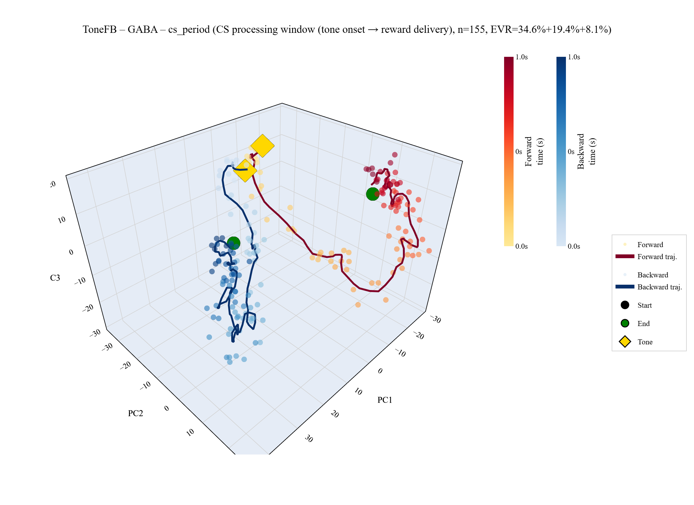
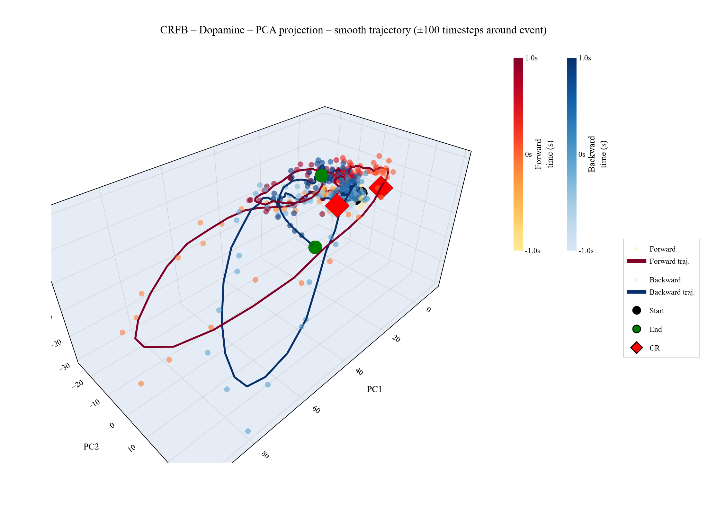
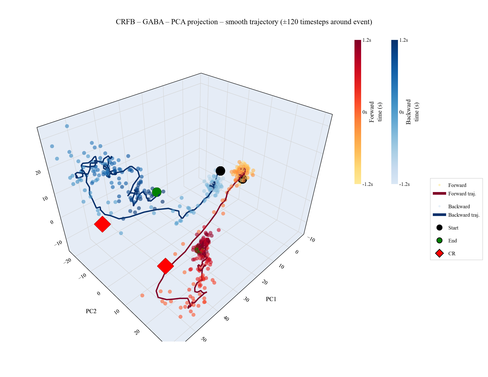

Do VTA dopamine neurons encode reward prediction error — or movement direction?
A population-level PCA framework testing 4 hypotheses across 730 DA and 102 GABA neurons.
Schultz (1997): DA neurons fire when reward exceeds expectation. VTA DA = scalar value signal.
Predicts: reward-locked deflections in latent trajectories, DA ≠ motor signals.
DA population activity is dominated by movement kinematics — forward vs backward direction — not value.
Predicts: spontaneous movement basis generalises to task; no reward-specific signal.
We use PCA on trial-averaged z-scored firing rates to test which theory the population geometry supports.
Spontaneous movement — no stimulus, no reward
Conditioned response — learned movement onset
Tone (CS) + reward (US) at ttone + 100ms
X ∈ Rn_neurons × 2·T = [ z_forward | z_backward ] — T = 1201 timesteps, dt = 10ms, event at t = 600
Variance maximisation in neuron-space.
Each timepoint is a sample in Rn.
| Analysis | PC1 | PC1-3 |
|---|---|---|
| SpontFB GABA | 39% | 57% |
| CRFB GABA | 27% | 46% |
| ToneFB GABA | 32% | 52% |
| SpontFB DA | 7% | 12% |
| CRFB DA | 9% | 17% |
| ToneFB DA | 21% | 30% |
PC1 captures 27-39% — a homogeneous inhibitory population with coordinated dynamics.
PC1 captures only 7-9% (Spont/CR). Diverse subpopulations (DF, DB, D, DFB) with distinct tuning.
Tone/CS synchronises DA subpopulations more than spontaneous movement.

Dopamine — 730 neurons, EVR = 12%

GABA — 102 neurons, EVR = 57%
Red = forward trajectory, Blue = backward. GABA shows clear directional separation; DA is more entangled.

ToneFB DA — large loops, poor direction separation

ToneFB GABA — distinct fwd/bwd regions
DA ToneFB shows large CS-driven excursions (arc length ~1095) but fwd-bwd separation only 7.8. GABA separation: 19-28 across datasets.
If movement direction is the primary organiser, a PCA basis learned from spontaneous movement should generalise to task contexts — even across different neuron populations.
Identical neurons, different event alignment. Fit PCA on dataset A, project dataset B — measure R².
Different individual neurons. Average within neuron groups (DF, DB, D, DFB) to create 4 pseudo-neurons. Cross-project between datasets.
R² = 1 − SSres / SStot
SStot = Σi || xi − μi ||²
SSres = Σi || xi − WTWxi ||²
Per-neuron mean μi from the training PCA is subtracted from the test data before projection. This corrected formulation matches what PCA actually optimises.
87-94% of task variance is captured by the spontaneous movement basis. DA shows ~10% additional task-specific variance vs GABA.
FFT each group's time-course → randomise phases → IFFT. Preserves autocorrelation & power spectrum; destroys inter-group temporal alignment.
X̂(f) = |X(f)| · eiφrand
Independently shift each neuron's fwd/bwd halves by a random offset. Preserves per-neuron autocorrelation; destroys across-neuron alignment.
Observed R² values significantly exceed null distributions (n=500 permutations).
p = (#{null ≥ obs} + 1) / (nperm + 1)
+1 correction prevents p=0 and ensures conservative testing.
GABA should be low-dimensional and direction-selective.
DA should be heterogeneous and task-modulated.
| Analysis | Mean Sep. | Peak Sep. | Post-event Sep. | Arc Length (fwd) | PR |
|---|---|---|---|---|---|
| SpontFB GABA | 28.4 | 42.1 | 31.2 | 385 | 3.8 |
| ToneFB GABA | 19.3 | 30.5 | 22.7 | 448 | 4.2 |
| SpontFB DA | 12.2 | 18.8 | 14.5 | 520 | 22.6 |
| ToneFB DA | 7.8 | 14.2 | 9.1 | 1095 | 8.4 |
GABA: High separation (19-28) — fwd & bwd trajectories occupy different regions. Strong direction encoding.
DA ToneFB: Largest arc length (1095) but lowest separation (7.8). Large excursions driven by CS, not by direction.
Participation ratio (PR): GABA ≈ 3-4 effective dimensions; DA SpontFB ≈ 23. Null model confirms separation p < 0.01.
Compute RDM (Representational Dissimilarity Matrix) for each population — pairwise temporal distances.
RDMij = 1 − corr(xt=i, xt=j)
Basis-free: captures representational geometry independent of rotation.
Optimal rotation + uniform scaling to minimise shape distance.
dproc = minR,s ||X − sYR||F²
Low disparity = similar trajectory geometry after removing rotation & scale.
DA and GABA RDMs are statistically different (one-sample t-test across epochs, p < 0.05).
GABA encodes a direction-dominated temporal geometry. DA encodes a CS/value-modulated geometry.
Validated via bootstrap pattern evaluation (n=1000).
If DA encodes value, trajectories should deflect at reward delivery (t = +100ms post-tone in ToneFB). If DA encodes movement, no such deflection should exist.
Trajectory velocity over time: v(t) = ||dZ/dt||. A reward signal would appear as a speed transient at t = +100ms in ToneFB but not SpontFB.
Fit PCA on one epoch, project all others. If pre-tone & post-reward share high R², the same latent structure persists across task phases.
Within-dataset: circular time-shift, recompute speed at reward index. Between-dataset: bootstrap resample ToneFB vs SpontFB post-event speeds.
Epochs: pre_tone [450,600) | cs_period [600,700) | post_reward [700,850)
Non-overlapping epochs (corrected from original [600,750) overlap bug).

DA — CS period [600, 700)

GABA — CS period [600, 700)
Divergence onset is consistent across datasets — near movement onset, not reward delivery. Cross-epoch R² shows the same latent structure persists across task phases.
If ToneFB (tone-aligned) and CRFB (movement-aligned) phasic DA bursts are the same movement-related signal, cross-correlation should peak at a lag consistent with reaction time (~100-400ms).
Peak lag at ~reaction time (0.1-0.4s). Symmetric peaks in both lag directions confirm the same event appears at different phases of each alignment window.
C(τ) = Σt ZTone(t) · ZCR(t + τ)
Principal angles: [0.985, 0.982, 0.927] — nearly 0°. ToneFB and CRFB GABA span the same 3D subspace.

CRFB DA — movement-aligned, partial overlap with ToneFB

CRFB GABA — clear fwd/bwd separation preserved
| Issue | Fix |
|---|---|
| Missing mean subtraction in cross-projection | Now uses pca.mean_ from training set |
| Epoch overlap: [600,750) ∩ [700,850) | cs_period [600,700), post_reward [700,850) |
| R² used global mean | Per-neuron mean (matches PCA objective) |
| PC alignment by index | Hungarian algorithm on cross-Gram matrix |
| No cross-validation for cross-class R² | 5-fold CV (contiguous time blocks) |
When comparing PCA from datasets A & B, PC1A may correspond to PC2B. The Hungarian algorithm finds the optimal permutation via the cross-Gram matrix:
Gij = |viA · vjB|
Maximises total alignment cost in O(k³) — superior to naïve index matching.
| H | Claim | Key Evidence | Metric | Status |
|---|---|---|---|---|
| H1 | Movement direction dominates latent structure | SpontFB basis generalises to task | R² = 0.87-0.94 | Supported |
| H2 | DA ≠ GABA latent variables | GABA: low-dim, direction-selective; DA: heterogeneous | PR: 3-4 vs 23 | Supported |
| H3 | No reward-specific deflection | Divergence onset at movement, not reward; cross-epoch R² high | See null models | Pending |
| H4 | CS & CR = same signal, time-shifted | Cross-corr peak at RT; subspace overlap ≈ 1.0 | lag ~ 0.1-0.4s | Supported |
DA encodes movement with ~10% additional task/value variance
GABA is a low-rank directional signal, consistent across all contexts
Project airpuff data onto ToneFB PCA space. If R² drops: value axis exists. If R² holds: same movement subspace.
Align per-trial force/lick traces to z-scored firing rates. Quantitatively link PC timecourses to kinematics.
Move beyond trial-averaged data. Cross-validate across individual trials to strengthen encoding claims.
Population geometry analysis across 832 VTA neurons and 3 behavioral contexts supports the kinematic hypothesis over RPE theory.